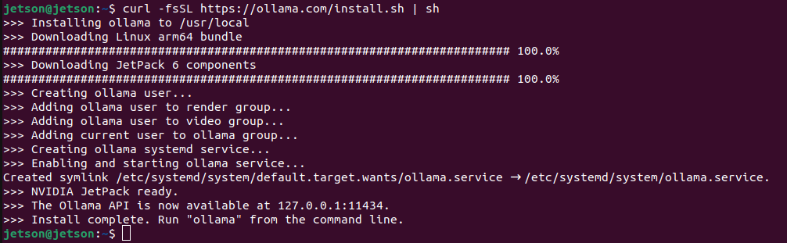

Tutorial - Ollama
Ollama is a popular open-source tool that allows users to easily run a large language models (LLMs) locally on their own computer, serving as an accessible entry point to LLMs for many.
It now offers out-of-the-box support for the Jetson platform with CUDA support, enabling Jetson users to seamlessly install Ollama with a single command and start using it immediately.
In this tutorial, we introduce two installation methods: (1) the default native installation using the official Ollama installer, and (2) the Docker container method, which allows users to avoid making changes to their existing system.

-
The
ollamaclient can run inside or outside container after starting the server . - You can also run an Open WebUI server for supporting web clients.
- Supports the latest models like [gpt-oss](https://ollama.com/library/gpt-oss{:target="_blank"}!
Ollama Server
What you need
-
One of the following Jetson devices:
Jetson AGX Thor Jetson AGX Orin (64GB) Jetson AGX Orin (32GB) Jetson Orin NX (16GB) Jetson Orin Nano (8GB)
-
Running one of the following versions of JetPack :
JetPack 5 (L4T r35.x) JetPack 6 (L4T r36.x)
-
NVMe SSD highly recommended for storage speed and space
-
7GBforollamacontainer image -
Space for models (
>5GB)
-
(1) Native Install
Note
Ollama native installer does not support Jetson AGX Thor Developer Kit yet.
If you want to run Ollama on Jetson AGX Thor Developer Kit, checkout the following Ollama container approach.
Ollama's official installer already support Jetson and can easily install CUDA-supporting Ollama.
curl -fsSL https://ollama.com/install.sh | sh

It create a service to run
ollama serve
on start up, so you can start using
ollama
command right away.
Example: Ollama usage
ollama

Example: run a model on CLI
ollama run llama3.2:3b
(2) Docker container for
ollama
You can use this Docker container built to run Ollama on Jetson Thor.
mkdir ~/ollama-data/
docker run --rm -it -v ${HOME}/ollama-data:/data ghcr.io/nvidia-ai-iot/ollama:r38.2.arm64-sbsa-cu130-24.04
It will take some time to pull (download) the container image.
Once in the container, you will see something like this.
Starting ollama server
OLLAMA_HOST 0.0.0.0
OLLAMA_LOGS /data/logs/ollama.log
OLLAMA_MODELS /data/models/ollama/models
ollama server is now started, and you can run commands here like 'ollama run gemma3'
root@2a79cc8835d9:/#
Try running a GPT OSS (20b parameter) model by issuing a command below.
ollama run --verbose gpt-oss:20b
It will download 14GB weight, so it takes some time here as well.
Once ready, it will show something like this:
root@2a79cc8835d9:/# ollama run --verbose gpt-oss:20b
pulling manifest
pulling b112e727c6f1: 100% ▕███████████████████████████████████████████▏ 13 GB
pulling fa6710a93d78: 100% ▕███████████████████████████████████████████▏ 7.2 KB
pulling f60356777647: 100% ▕███████████████████████████████████████████▏ 11 KB
pulling d8ba2f9a17b3: 100% ▕███████████████████████████████████████████▏ 18 B
pulling 55c108d8e936: 100% ▕███████████████████████████████████████████▏ 489 B
verifying sha256 digest
writing manifest
success
>>> Send a message (/? for help)
Try any prompt and you will get something like this.
root@c11344f6bbbc:/# ollama run --verbose gpt-oss:20b
>>> why is the sky blue in one sentence
Thinking...
We need to answer: "why is the sky blue in one sentence". Just one sentence. Provide explanation: Rayleigh scattering of sunlight,
shorter wavelengths scatter more. We'll produce a single sentence. Let's give a concise explanation.
...done thinking.
The sky looks blue because the Earth's atmosphere scatters shorter-wavelength (blue) light from the sun more efficiently than longer
wavelengths, a phenomenon called Rayleigh scattering.
total duration: 3.504445244s
load duration: 225.399151ms
prompt eval count: 76 token(s)
prompt eval duration: 673.487645ms
prompt eval rate: 112.85 tokens/s
eval count: 88 token(s)
eval duration: 2.603822053s
eval rate: 33.80 tokens/s
>>> Send a message (/? for help)
You can finish the session by typing
/bye
.
We can use
jetson-containers
to run Ollama.
# models cached under jetson-containers/data
jetson-containers run --name ollama $(autotag ollama)
# models cached under your user's home directory
docker run --runtime nvidia --rm --network=host -v ~/ollama:/ollama -e OLLAMA_MODELS=/ollama dustynv/ollama:r36.2.0
Running either of these will start the local Ollama server as a daemon in the background. It will save the models it downloads under your mounted
jetson-containers/data/models/ollama
directory (or another directory that you override with
OLLAMA_MODELS
)
Start the Ollama command-line chat client with your desired
model
(for example:
llama3
,
phi3
,
mistral
)
# if running inside the same container as launched above
/bin/ollama run phi3
# if launching a new container for the client in another terminal
jetson-containers run $(autotag ollama) /bin/ollama run phi3
Or you can install Ollama's binaries for arm64 outside of container (without CUDA, which only the server needs)
# download the latest ollama release for arm64 into /bin
sudo wget https://github.com/ollama/ollama/releases/download/$(git ls-remote --refs --sort="version:refname" --tags https://github.com/ollama/ollama | cut -d/ -f3- | sed 's/-rc.*//g' | tail -n1)/ollama-linux-arm64 -O /bin/ollama
sudo chmod +x /bin/ollama
# use the client like normal outside container
/bin/ollama run phi3
Open WebUI
To run an
Open WebUI
server for client browsers to connect to, use the
open-webui
container:
docker run -it --rm --network=host --add-host=host.docker.internal:host-gateway ghcr.io/open-webui/open-webui:main
You can then navigate your browser to
http://JETSON_IP:8080
, and create a fake account to login (these credentials are only local)

Ollama uses llama.cpp for inference, which various API benchmarks and comparisons are provided for on the Llava page. It gets roughly half of peak performance versus the faster APIs like NanoLLM , but is generally considered fast enough for text chat.